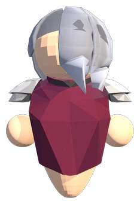
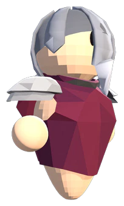
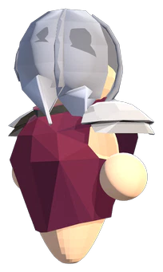

Vesper
Vesper (Wayfarer) gives 5 quest lines.
Quest lines
- The Endless Road: Vesper has gone further into the Endless Dungeon and its Dark than anybody. (9 steps)
- The Worm's Teeth: Vesper knows how to get the fangs out of the Desert Worm. (4 steps)
- Breaking Stone: Vesper knows where the Sandstone Golem's stone gives way. (3 steps)
- Maps and Seals: Vesper shows you how seals and charts make a long trip shorter. (3 steps)
- The Far Edge: Vesper wants every corner of the Endless Dungeon walked, and walked well. (3 steps)
Thanks. The road's safer now.Vesper, on a quest turned in
Gallery







Trivia
Not written yet
Anything else worth knowing about Vesper.